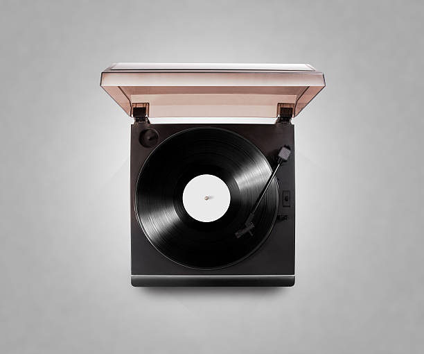

Desk Review
First we check the collection shape
Batch size, storage condition, sleeve visibility, and obvious high-demand genres guide the first estimate.
Turn records, turntables, and audio accessories you no longer use into fair cash offers, bonus store credit, or an upgraded listening setup.
A trade-in page should feel like an appraisal desk, not a product gallery. Each photo supports a different review step.
Batch size, storage condition, sleeve visibility, and obvious high-demand genres guide the first estimate.
Our trade-in desk looks beyond a quick title list. We check pressing details, sleeve condition, record grade, demand, completeness, and how each item plays. You get a clear explanation before accepting any offer.
If it belongs in a serious listening room, there is a good chance we can review it.
LPs, 45s, box sets, sealed copies, first pressings, imports, audiophile reissues, and well-kept everyday collections.
Turntables, cartridges, phono preamps, receivers, speakers, headphones, record cleaners, and useful setup tools.
Full shelves, inherited collections, DJ crates, label runs, genre-focused libraries, and mixed-condition lots.
These details help us make a better and faster offer.
Records with fewer scratches, quiet playback, sharp labels, and sturdy sleeves usually receive stronger offers.
Original pressings, limited editions, colored variants, obi strips, booklets, inserts, and complete box sets can increase value.
Popular artists, hard-to-find genres, strong local demand, and audiophile labels influence trade-in credit.
A little preparation helps us appraise faster and helps you get the most accurate value.
| Bring This | Why It Helps | Best Tip |
|---|---|---|
| Artist and title list | Speeds up first review | Photos of shelf spines are fine for large collections |
| Pressing notes or barcodes | Helps identify editions | Include matrix numbers only for rare records |
| Equipment model numbers | Confirms compatibility and resale range | Bring power adapters, dust covers, cables, and manuals |
| Condition notes | Sets honest expectations | Mention skips, warped records, missing inserts, or noisy channels |
Pick the option that best matches your next move.
Best when you want a straightforward payout after the collection is reviewed and accepted.
Choose store credit when you plan to upgrade records, cartridges, cleaning tools, or turntables.
Apply your value toward a better turntable, phono preamp, speakers, or a full listening package.
Quick answers before you submit the form.
Send us the basics and we will reply with the next step, what to bring, and whether an appointment is recommended.
Extra clarity for customers who want to know what happens after they submit.

We explain why an item is strong, average, or lower value.

Choose cash, higher store credit, or upgrade credit toward gear.
Collections are sorted carefully before any offer is finalized.

Large collections can be reviewed by appointment when transport is difficult.
Helpful expectations before a customer visits.